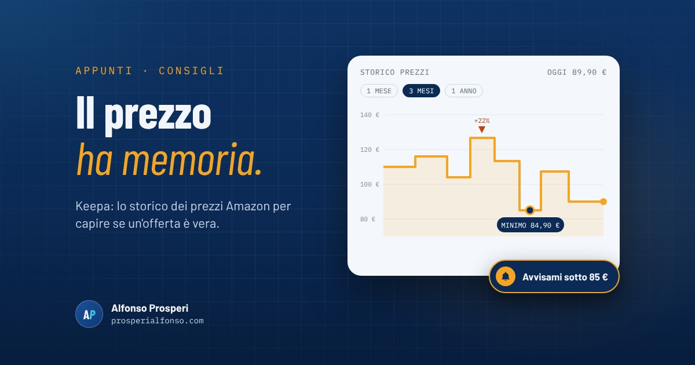

Quando su Amazon vedi un prodotto "in offerta a -40%", come fai a sapere se è davvero un affare? Il modo più semplice è guardare come è cambiato il prezzo nelle settimane precedenti. È quello che fa Keepa, un servizio gratuito che segue i prezzi di milioni di prodotti su Amazon, anche su Amazon Italia.
Cosa fa
- Grafico dello storico prezzi. Per ogni prodotto mostra l'andamento del prezzo nel tempo, del nuovo e dell'usato. Così capisci se il prezzo di oggi è basso davvero o se il mese scorso costava meno.
- Avvisi di prezzo. Scegli il prezzo che sei disposto a pagare e Keepa ti avvisa quando ci arriva. Ti avvisa anche quando un prodotto esaurito torna disponibile.
- Confronto tra Paesi. Mostra il prezzo dello stesso prodotto sugli Amazon di altri Paesi, utile per capire se in Italia lo stai pagando di più.
Come si usa
- Dal computer. Installi l'estensione per Chrome, Firefox o Edge. Da quel momento, quando apri un prodotto su Amazon il grafico compare direttamente nella pagina, senza fare nient'altro.
- Dal telefono. C'è l'app ufficiale Keepa per Android. In alternativa puoi aprire il sito keepa.com dal browser.
- Dal sito. Cerchi il prodotto per nome, oppure incolli il link della pagina Amazon.
Per usare gli avvisi conviene creare un account gratuito: così ritrovi in un unico posto tutti i prodotti che stai seguendo.
Come leggere il grafico in pochi secondi
- Scegli il periodo. Sotto il grafico puoi passare da un giorno a una settimana, un mese, tre mesi o un anno. Per un acquisto importante guarda almeno gli ultimi tre mesi.
- Guarda il punto più basso. Se il prezzo di oggi è vicino al minimo del periodo, l'offerta è buona. Se è molto più alto, conviene aspettare.
- Controlla cosa è successo prima dello sconto. Se il prezzo è salito qualche giorno prima di scendere, lo "sconto" è solo un ritorno al prezzo normale.
- Leggi la legenda. Ogni colore corrisponde a un tipo di prezzo, per esempio quello venduto da Amazon, quello dei venditori terzi o l'usato. Puoi accendere o spegnere le linee per vedere solo quelle che ti interessano.
Gratis o a pagamento?
Per chi compra bastano le funzioni gratuite: grafico, avvisi e confronto tra Paesi. Esiste anche un abbonamento con dati e strumenti in più, pensato soprattutto per chi vende su Amazon: per fare acquisti non serve.
Un aiuto in più con gli sconti
Dal 2023, quando un negozio annuncia uno sconto, il prezzo di partenza deve essere il più basso degli ultimi 30 giorni. Con Keepa puoi controllarlo da solo, prodotto per prodotto: ne parlo nella guida al Black Friday senza fregature. E se cerchi un risparmio in più, guarda anche l'usato garantito e il ricondizionato, come racconto qui.